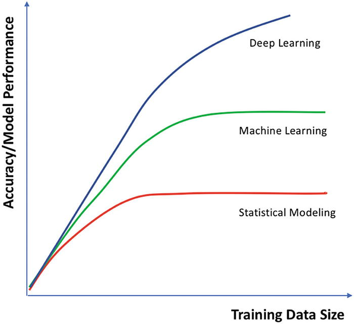

So, only neural networks are AI?
Well, maybe not, but...
You've probably heard a bunch of different terms associated with artifical intelligence, some of the most common being "deep learning" and "machine learning". Like many concepts, the meanings of these terms are fuzzy and can change depending on your perspective. Based solely on a general semantic point of view, we could reasonably define "artificial intelligence" as any system that mimics natural intelligence using computers. Of course, then we'd need to define natural intelligence! Historically, we generally think of an AI as 'useful' if it can perform as good as or better than a professional human at a given task.
But continuing on, "machine learning" could be defined as a type of "artificial intelligence" that works by providing training data to the computer and allowing the computer to 'learn' how to be 'intelligent' by analyzing the training data. If we continue along this general semantic path, "deep learning" could be reasonably defined as a specific type of "machine learning" that uses very large (or "deep") stacks of neural network layers to learn from training data.
Semantically, these definitions basically make sense and organize AI-related concepts into an "is a" hierarchy: deep learning is a type of machine learning approach, which in turn is a type of artificial intelligence. This conceptual organization allows us to draw an organizational diagram like the one below, which clearly illustrates the "is a" hierarchy based on set-overlaps.

From a conceptual or theoretical perspective, we have defined many of the core terms commonly associated with AI nowadays, and we even have a clear and concise diagram to help us organize these ideas.
However, this conceptual perspective can easily get us into big trouble 'in the field', when we try to apply AI-related ideas to analyze real data and address real complex problems. This trouble arises primarily because our conceptual organization provides little guidance to help us decide how to choose a methodology or approach that is suitable to a specific problem, and it fails to coincide with how we generally think about the practical advantages and disadvantages of different types of methods commonly associated with "artificial intelligence", "machine learning" and "deep learning".
If we take a practical perspective, what we want to be able to do 'in the field' is to make accurate and reliable inferences from data. To do so, we need some guidance to help us select the appropriate inference method, given the data we expect to have and the complexity of the inference we would like to make.
The first thing we need to accept is that all reliable data-driven inferences rely on statistical analysis. Whether you're doing a basic t-test with 2 degrees of freedom or taining a 43-million-parameter inception network, you are doing statistical data analysis.
Once we accept that reliable data analysis is built on statistics, we can start to use concepts from statistics to organize AI-related terms. For example, "machine learning" is simply a general approach for fitting a statistical model to your data. And "deep learning" is just fitting a big, complex neural-network model to your data. Statistically, 'fitting' just means optimizing the parameters of the model so they minimize a user-defined 'loss function'. So, from a statistical perspective, 'learning' is not that magical; it just means that you are optimizing your model's fit to some specific data, given your loss function.
As an example, let's consider a simple linear model:
y = m * x + b
This linear model relates two variables, x and y. Given a value for x, the model calculates the corresponding y value using two "free parameters": m and b, where m is the slope of the line and b is the y-intercept (ie, the value of y when x is zero).
The free parameters of the model, m and b, are unspecified; they can take on any values we'd like, but we can't use the model until we figure out what values we should choose for m and b. So, how do we choose appropriate values for m and b?
Given some 'training data': examples of 'real' x,y pairs, we can 'learn' the appropriate values for m and b by 'fitting' our linear model to the training data. How do we do this? Let's start by plugging in some 'random' values for m and b:
y = 2.4851 * x + -18.3284
Now our linear model is fully-specified; we can use it to calculate the corresponding y value for any value of x. But is the model any good?
To determine how good our fully-specified model is, we take the x values from the training data, use our model to calculate the corresponding predicted y values (often denoted ŷ, or "y-hat"), and then see how 'close' our predicted ŷ values are to the 'true' corresponding y values in our training data.
The user-specified "loss function" quantifies how 'close' our predicted ŷ values are to the true y values in the training data. We can use any loss function we'd like, the most common in this case probably being root-mean-square deviation, or "RMSD". We won't worry about how RMSD is calculated right now. What matters is that the loss function, whatever it is, quantifies how 'good' or 'bad' our model is at predicting the true y values from the corresponding x values in our training data. We can then keep trying new values for the free parameters in our model (m and b, in this case), until the loss function is as small as we can possibly make it.
Once we have found the values for m and b that minimize the loss function, given our training data, we say our model has been 'fit' to the training data. Alternatively, we could say that our model has 'learned' the best-fit values for m and b from the training data.
Really, that's all "machine learning" is, from a statistical perspective; it's just fitting a model's free parameters to some training data! The process is the same whether your model is a simple linear one with two free parameters or a big, complex neural network with millions of free parameters. So, "deep learning" isn't some magical new thing, either; it's just using the same model-fitting process to fit a big, complex model!
No matter what model we have, the "learning" part is essentially the same: fit the model to your training data by minimizing your specified loss function. All statistical inferences basically work this way.
From a practical perspective, then, reliable statistical analysis means choosing the statistical model that is most appropriate for the data and inference problem at hand. This is often couched in terms of the "bias-variance tradeoff".
Without getting too technical, we can think of there being two primary sources of inference error:
-
Bias error - occurs when your statistical model is too simple for the
inference problem.
All models make assumptions about the data and the structure of the inference problem. For example, a linear model assumes that the data follow a straight line. In general, the simpler the model, the more assumptions it makes. Any assumption a model makes will "bias" the model in some way. For example, a linear model will only infer a linear relationship among the data, even if the real relationship is non-linear. Bias error is sometimes called "underfitting". It can generally be alleviated by using a more complex model.
-
Variance error - occurs when your statistical model is too complex for
the amount of data you have.
So, why not just use the 'most complex' model available for all data analysis? Well, if the model is too complex, it can miss the general trends in the data that you want it to find, and instead start to fit the random noise in the data. When this happens, the model may appear to fit the data extremely well, but it doesn't actually tell you anything about the structure of the data and can perform very poorly in practice. Variance error is often called "overfitting". It can be alleviated by collecting more data or by simplifying the model.
Most real-world inference problems are fairly complex. Based on the bias-variance tradeoff, we should therefore try to use the most complex model we can, given the amount of data we have, to avoid underfitting. If we have tons of data, we can probably avoid overfitting, even if we use a very complex model. However, if we have limited data, we will need to use a simpler model to avoid overfitting. The 'sweet spot' in the bias-variance tradeoff is found when we select a model that avoids both under- and over-fitting, given the data we have.
So, what types of models are available to us?
All classical statistical modeling approaches are essentially riffs on linear models; they are linear (or nealy-so). Commonly-used t-tests, correlations, regressions, ANOVA, Chi-square tests, principle component analyses... all basically linear models. These are the simplest statistical models we have. They generally perform best when there is limited data or the inference problem is very simple. Classical statistical models tend not to overfit but will underfit in many cases.
All methods commonly associated with the term "machine learning" are essentially extensions of classical statistical modeling approaches that introduce structured non-linear components; they are close-to-linear. Generalized linear models (yep, linear), fancy regressions like lasso, ridge or Bayesian regression, support vector machines, naive Bayes classifiers, decision trees, and simple neural networks... all introduce 'a little bit' of non-linearity into what is basically a linear model. These models are a little more complex than classical statistical models. They generally perform best with intermediate amounts of data; they can overfit when data are limited and underfit when the inference problem is highly non-linear.
Deep learning methods based on very large neural networks are different. Although the basic neural network component is a simple linear model, deep networks typically incorporate a very high degree of non-linearity. In fact, it has been known for some time that, under fairly general conditions, neural networks can reliably approximate any functional form ( eg, Kratsios, 2021). Because of their complexity, deep learning methods typically require very large amounts of data to avoid overfitting. They typically don't underfit.
Below is a very common graph illustrating the relationships among classical statistical modeling approaches (ie, linear models), methods from machine learning (ie, near-linear models) and deep learning methods. This particular graph is from Moolayil (2019, An introduction to deep learning and Keras), but there are similar diagrams all over the internet.
The graph plots model performance or accuracy on the Y-axis against data set size on the X-axis, assuming that the analysis goes well and avoids gross under- or over-fitting errors. The take-home message is that deep learning methods are the only approaches we know of that continue to get better and better as data set size increases, under real-world conditions. At some point, machine learning methods 'saturate' due to their limited non-linearity, and giving them more data to analyze doesn't help them to provide more reliable inferences. Classical statistical approaches saturate at even smaller data set sizes, due to their strong linear constraints. However, because deep learning models can essentially approximate any complex function, they can reliably identify highly non-linear relationships among the data, given enough data to analyze. How much data? contemporary deep learning models are commonly trained using 100-million data samples or more! We are unlikely to see such large data sets in the agricultural or life sciences.
Of course, what this graph is ignoring is the potential for overfitting with complex models. When data sets are very small, it can be extremely difficult to avoid overfitting errors, particularly with deep learning models. The bias-variance tradeoff ensures that deep learning is not always the best method to use for every problem! But, as we'll see later on in this course, it is possible to implement many (all?) classical statistical models and machine learning models using neural networks!
So, what is "artificial intelligence", then?
Based on this discussion, I'm going to go out on a limb and provide a practical definition of "artificial intelligence" as: using very complex neural networks to analyze data.
Please feel free to disagree with my definition; I'm certain many, many people will, and they will have good reason to. However, I will say that this practical definition has two things going for it.
-
It coincides with how professionals working in the field use the term.
If you attend a professional conference on AI or read research papers in the field, they will be primarily focused on deep neural networks. If you start saying you are doing AI research or using AIs, but you aren't using deep neural networks, people in the field are going to start looking at you sideways.
-
Deep neural networks are the only statistical inference methods
that have ever achieved human-level (or super-human) performance on
complex inference tasks.
So, if we look back at our original 'semantic' definition of AI as 'mimicking natural intelligence', deep neural networks are the only methods that actually do that.
Even if you strongly disagree with equating AI with deep neural networks, it's clear from even a very casual perusal of the field that neural nets are by far the dominant paradigm for doing AI today. Of course, this is likely to change in the future, whenever a new methodology comes out that is better than deep neural networks. And of course it wasn't always the case that neural networks dominated the AI scene.